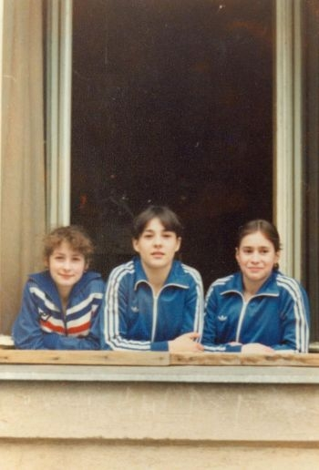

Mirela Barbalata (ROM)
1984 Cottbus Intl. AA Silver Medalist

Mirela Barbalata (center) with
teammates
Ecaterina Szabo and Lavinia Agache
Medal Total
World Championships: 1 Silver
Mirela was born on October 23, 1967. At the 1983 World Championships in Budapest, she scored a perfect 10 for her optional vault.
Competition Results
1982
HOL-ROM Dual Meet: 1st Team, 7th AA
Jr. Friendship Tournament (Druzhba): 2ndTeam, 6th AA, 1st V, 2nd FX
1983
GBR-ROM Dual Meet: 1st Team, 8th AA (reserve)
Moscow News International: 3rd V
Riga International: 2nd V
World Championships: 2nd Team
1984
Cottbus International: 2nd AA, 2nd V, 2nd B, 3rd UB, 6th FX
FRG-ROM-HUN Tri-Meet: 1st Team, 10th AA
1985
World University Games: 2nd Team, 4th AA
This page was created on May 21,
2009.
© Gymn Forum